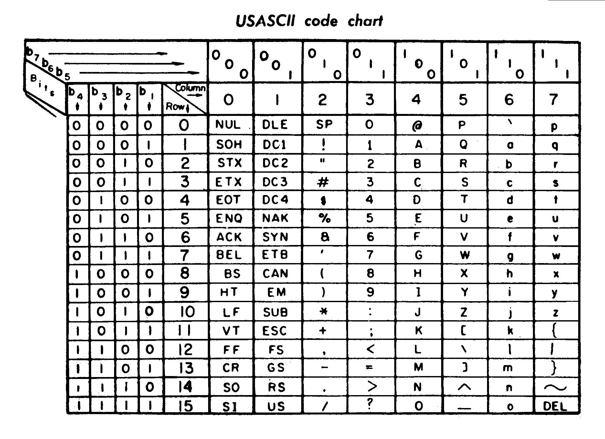

FP.py
An Introduction to Functional Programming in Python
by Elliot Cameron / 3noch
Follow along
3noch.github.io/fp.py
Note: Alt+Click on an element to zoom in.
Ask questions!
Objective
Objective
Not
- to convince you to write all your Python code in FP style.
To
- broaden your perspective on programming in general,
- increase your appreciation for alternative ways of approaching a problem,
- help you write better code.
Who?
ref
FP is starting to gain momentum
It's weird
and scary
type Seconds = Int
secs :: Int -> Seconds; secs = (* 1000000)
wait :: Seconds -> IO (); wait = threadDelay . secs
schedule :: Seconds -> IO () -> IO ThreadId; schedule s a = forkIO $! wait s >> a
(<>) :: ByteString -> ByteString -> ByteString; (<>) = B.append
(//) :: a -> (a -> b) -> b; x // f = f x
(|>) :: IO () -> IO () -> IO (); a |> b = forkIO a >> b
infixr 0 =>>; (=>>) :: Monad m => m a -> (a -> m b) -> m a
a =>> f = do r <- a; _ <- f r; return r
type ErrorIO = IO
att :: IO a -> IO (Maybe a); att a = tryWith (const $! return Nothing) (Just <$> a)
tryRun :: IO () -> IO (); tryRun a = tryWith (\x -> do print x; wait 2) a
(???) :: ErrorIO a -> [IO a] -> IO a; e ??? as = foldr (?>) e as
where x ?> y = x `X.catch` (\(_ :: X.SomeException) -> y)
ref
But beware the Blub Paradox
"I don't understand your way, so mine must be better."ref
Discern
There are two ways to be puzzled
| \[ \begin{aligned} \nabla \times \vec{\mathbf{B}} -\, \frac1c\, \frac{\partial\vec{\mathbf{E}}}{\partial t} & = \frac{4\pi}{c}\vec{\mathbf{j}} \\ \nabla \cdot \vec{\mathbf{E}} & = 4 \pi \rho \\ \nabla \times \vec{\mathbf{E}}\, +\, \frac1c\, \frac{\partial\vec{\mathbf{B}}}{\partial t} & = \vec{\mathbf{0}} \\ \nabla \cdot \vec{\mathbf{B}} & = 0 \end{aligned} \] | |
| he knows something I don't | he doesn't know what he's doing (and neither do I) |
Myth 1: FP is Hard
hard to what?
| learn | probably only if you're already used to something else* |
| read | same deal* |
| test | to the contrary, FP tends to be much easier to test* |
| debug | to the contrary, expressions are the easiest types of things to debug* |
* courteously suspend disbelief if possible
Myth 2: FP is Slow
not necessarily...
refMyth 3: FP is for Idealists
prove it
To become a competent realist you must start with ideals.
- Anonymous
How we got here
We live in the imperative dynasty:
object-oriented and procedural are both imperative
ref
driving directions depend on your current position
The Father of Imperative Thinking
 ref
ref
Alan Turing: Invented the "Turing Machine" (1936)
The Father of Functional Thinking
 ref
ref
Alonzo Church: Formulated λ-calculus (1928-1929) and Turing's Ph.D. Advisor
Next turn: Maps
refmaps do not depend on your current position
Principle 1: Functional
math and pure functions
Math 101: Functions
 ref
ref
|
For every input there is precisely one output. | |
| The Vertical Line Test |
a.k.a. Referential Transparency
and why FP is sometimes called "value-oriented programming"
- referential transparency
-
ref·er·en·tial trans·par·en·cy
An expression is said to be referentially transparent if it can be replaced with its value without changing the behavior of a program (in other words, yielding a program that has the same effects and output on the same input). The opposite term is referential opaqueness.
While in mathematics all function applications are referentially transparent, in programming this is not always the case. The importance of referential transparency is that it allows the programmer and the compiler to reason about program behavior. ref
Example: Python's ord function

ord("P") can be replaced with 80 in every case, and vice versa, without any change to a program's behavior.
Observe:
|
Python Functions? Yes
Math Functions? Yes |
|
Python Functions? Yes
Math Functions? No |
How to Break Referential Transparency
and why FP is also sometimes called "programming without assignment"
- The arch-nemesis of referential transparency is mutable state.
- If you want referential transparency, you must give up
assignment- including
side-effects.
global_state = 5
def get_next_state(steps):
global global_state
global_state += steps # <-- NOPE!
return global_state
def save_file(contents):
with open("file.txt", "w") as file_handle:
file_handle.write(contents) # <-- NOPE!
def change_arg(arg):
arg = arg + 1 # <-- NOPE!
def hello_world():
print("Hello world") # <-- NOPE!
"Impossible!"
Oh but it is. Turing and Church proved that Turing machines and λ-calculus are equivalent models of computation!
"But how?"
More on that later.
Why Bother?
why referential transparency matters
-
Optimizes the programmer's abilities
- Deterministic
- Unaffected by ordering or time
- Simple to understand
- Easy to refactor
- Easy to abstract / modularize
- Easy to compose (think Legos)
- Easy to isolate and test
- Easy to verify by proofs
-
Optimizes the machine's abilities
- Memoization
- Common subexpression elimination
- Lazy evaluation
- Parallelization
- Easy to verify by static analysis
Principle 2: Functions of Higher Order
first-class and higher-order functions
refHigher-order Functions
are functions that give or take functions
First-class Functions
are boring
"First-class" means you can pass it around just like anything else (numbers, strings, objects).
# map takes another function
last_names = map(lambda full_name: full_name.partition(" ")[2], names)
# filter does too
capitalized_names = filter(lambda name: name[0] == name[0].upper(), last_names)
def compose(f, g): # takes two functions
return lambda x: f(g(x)) # gives a new function
That's it: 2 Principles
What happens when we apply them?
Application 1: Immutable Data

Don't change, copy
# no
age = 30
if date > birth_date:
age += 1
# yes
age = 30
corrected_age = age + 1 if date > birth_date else age
Isn't that horribly slow?
it depends
-
Some algorithms actually go faster with immutable structures,
especially ones that can run in parallel. -
Optimizations exist to make immutable data work efficiently:
- Sharing*
- Path copying*
- etc.
* Available to Python through a library.
- In many average cases, forgoing mutation is much easier than you might think.
Application 2: No Loops
the_sum = 0
for i in range(10):
the_sum += i # NOPE!
Use recursion instead
def get_sum(values, start=0):
if not values:
return start
the_rest = values[1:] # why is this ok?
return get_sum(the_rest, start + values[0])
the_sum = get_sum(range(10)) # 45
# or
get_sum = lambda values, start=0: get_sum(values[1:], start + values[0]) if values else start
the_sum = get_sum(range(10)) # 45
# or
the_sum = sum(range(10)) # 45
Recursion is Bad in Python
Python doesn't implement any optimizations for recursion, so recursion bloats your stack really fast, runs very slowly, and can easily hit the recursion limit.
get_sum(range(1000000)) # takes forever
But not to fear, we can
- use a library to help, or
- realize that...
All Loops Can Be Broken Down
sum is an example of a particular type of loop: fold.
All loops can be written in terms of
- maps
- filters
-
folds (also called "reduce")
in fact, fold is really all you need
map(lambda x: x * 2, range(10)) # [0, 2, 4, 6, 8, 10, 12, 14, 16, 18]
filter(lambda x: x < 5, range(10)) # [0, 1, 2, 3, 4]
reduce(lambda x, y: x + y, range(10), 0) # 45
# mixup
map(lambda x: x * 2, filter(lambda x: x < 5, range(10))) # [0, 2, 4, 6, 8]
# or
[x * 2 for x in range(10) if x < 5] # [0, 2, 4, 6, 8]
We can rely on these tools to skip the need for explicit recursion.
Application 3: Partial Application and Currying
and why every function really only has one argument

{kind=link}
{kind=link}
{kind=link}
{kind=link}
{kind=link}
{kind=link}
{kind=link}
Partial Application
fill in the holes
What happens when you don't provide all the arguments?
def add_them(a, b):
return a + b
add_them(2)
# TypeError: add_them() takes exactly 2 arguments (1 given)
Why not build the result in phases?
from functools import partial
partial(add_them, 2)
# <functools.partial at 0x322bf48>
partial(add_them, 2)(3) # 5
Currying
not directly supported, but don't need it
-
Currying treats every function as a single-argument function.
Given its one input, it returns a new function that takes the next one. -
Currying is very nice, but not essential.
In Python, we can use libraries to give us some of these features.
Application 4: Core and Crust
designing entire apps with FP
Pure Core / Thin Effectful Crust
Push as much "impure" code into the crust, including:
- human interaction
- file I/O
- networking
- time
Dependency Injection / Parametric Design
Avoiding mutation essentially forces you to build parametric components,
i.e. pieces that require their dependencies before they can be used.
Application 5: Verifiable Correctness
testing expressions
{kind=link}
Why Expressions Rock for Testing
- Time is in your hands: start, stop, fast-forward, rewind
- Zooming: see parts working at any layer
- Property-based: you can write your tests in terms of properties instead of inputs
- Proofs: you can write formal proofs
Lots more...
we're only just getting started
- Algebraic data types
- Pattern matching
- Lazy data structures (infinite lists, etc.)
- Functors, Monads, etc.
- Concurrency / Parallelism
Don't believe me?
try asking
- Edsger Dijkstra
- Joel Spolsky
- Uncle Bob Martin (author of Clean Code, etc.)
- of course, many others
Disclaimer
Don't confuse your experience of functional programming in Python with functional programming in general.
Python's design is not intentionally supportive of FP, so the experience suffers to some degree.
Every-day life
fn.py is a great start.
Go forth and code.